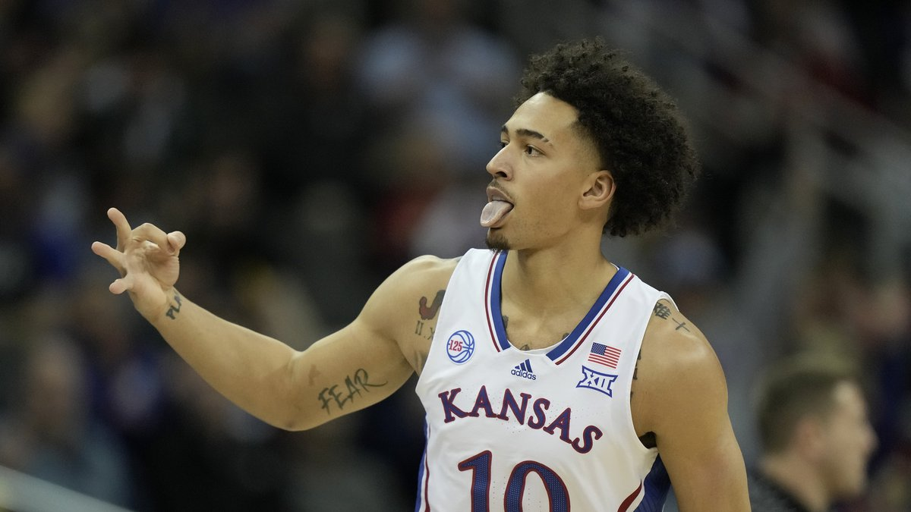

Позиція: Форвард
Зріст: 6'8" (2.03 м)
Вага: 220lb (100 кг)
Дата народження: Листопад 4, 2000
Країна: США
Вік: 22 роки
Драфт: 2023 Раунд 2 Пік 51
Останній відвіданий заклад: Університет Канзасу
Досвід: Новачок
Вільсон був обраний Бруклін Нетс з 51-им загальним вибором у другому раунді Драфту НБА 2023 року. 5 липня 2023 року Вільсон підписав двосторонній контракт з Нетс.
8 листопада 2019 року Вільсон отримав перелом щиколотки у матчі проти UNC Greensboro у своєму другому кар'єрному поєдинку. Він пропустив решту сезону і отримав медичний редшірт після операції. 8 грудня 2020 року Вільсон набрав 23 очки та здійснив 10 підборів, зробивши вирішальний триочковий кидок за 42 секунди до завершення гри, у перемозі з рахунком 73–72 над восьмим Creighton. У своєму першому сезоні Вільсон середньо набирав 11,8 очка та 7,9 підбору за матч, отримавши нагороду "Новачок року" в Біг 12. 9 квітня 2021 року він оголосив про свій намір взяти участь у Драфті НБА 2021 року, продовжуючи залишити собі можливість грати в коледжі. Вільсон нарешті повернувся до Канзасу. 2 листопада його було дискваліфіковано на три матчі через арешт за підозрою у водінні в стані алкогольного сп'яніння. Вільсон був визнаний третьою збірною "Біг 12" як софтмор. Він середньо набирав 11,1 очка та 7,4 підбору за матч, допомагаючи Джейхокс виграти національний титул. Після сезону Вільсон оголосив про свій намір взяти участь у Драфті НБА 2022 року, але нарешті відмовився від участі в ньому. Як старший, Вільсон був названий Гравцем Року "Біг 12".
| PPG: | -- |
| APG: | -- |
| RPG: | -- |
| BLK: | -- |
| STL: | -- |
| MIN: | -- |